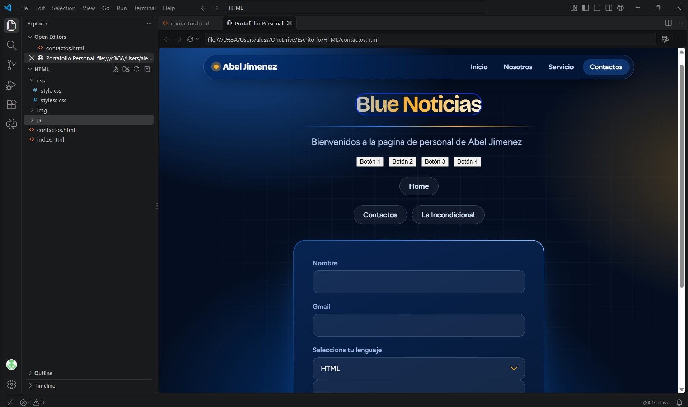
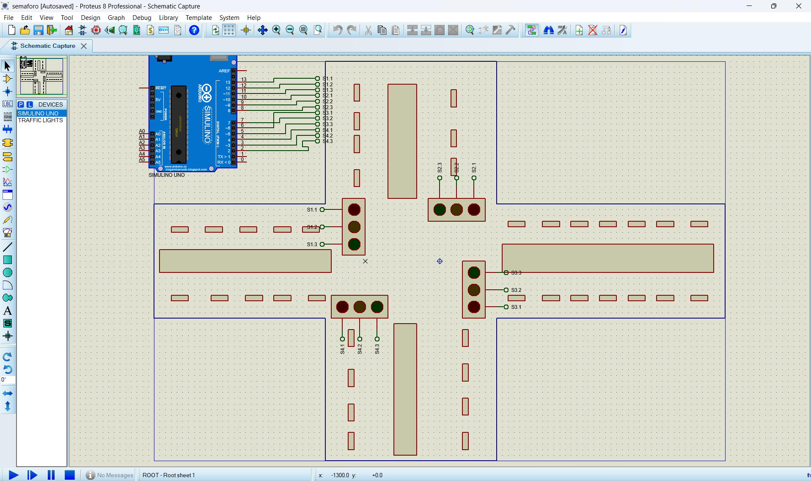
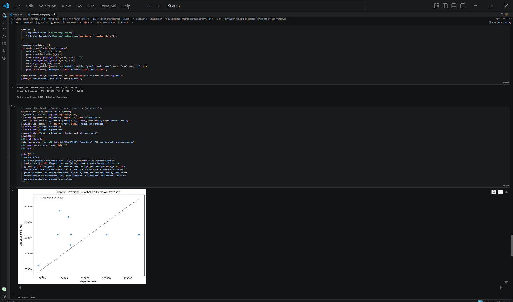
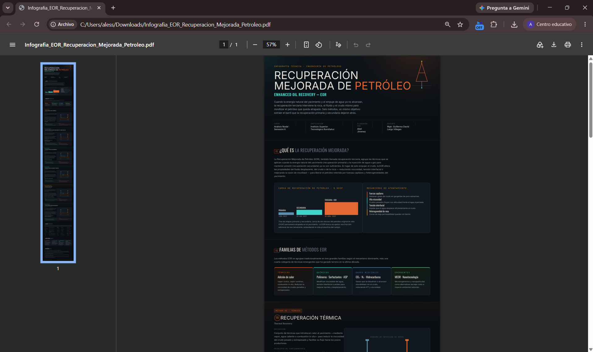

HTML
Estructura de páginas web.
Estudiante de Ingeniería en Sistemas Inteligentes
Soy un estudiante de cuarto semestre de Ingeniería en Sistemas Inteligentes, apasionado por el desarrollo web y la creación de soluciones tecnológicas. A lo largo de mi carrera, he trabajado en proyectos que van desde la implementación en protoboards hasta el diseño de sitios web funcionales. Estoy comprometido con seguir aprendiendo y aplicando mis conocimientos para resolver problemas del mundo real
Soy una persona responsable, creativa y comprometida con mi aprendizaje. Me destaco por mi capacidad para trabajar en equipo, resolver problemas y adaptarme a nuevos desafíos. Tengo habilidades en programación, tecnología y pensamiento lógico, además de disposición para aprender, mejorar mis conocimientos y alcanzar mis objetivos personales y profesionales.
Estructura de páginas web.
Estilos y diseño visual.
Control de versiones.
Organización de contenido.
Este fue uno de mis primeros proyectos personales, en el cual realicé como práctica el diseño con CSS para seguir moldeando mis conocimientos sobre las etiquetas, para la página de noticias deportivas de mi hermano mayor.

En este sistema apliqué el software Proteus 8 Professional para diseñar una simulación real de semáforos en un gráfico de calles, aprendiendo a conectar los circuitos y a programar el código de las placas Arduino y Raspberry Pi.

Actividad integradora de análisis exploratorio con datos de emergencias del ECU 911 (2022-2026). Usé Python con pandas y matplotlib para responder preguntas del caso, completar el diccionario de datos y resumir los hallazgos en una infografía.

Infografía en formato póster para la materia Análisis Nodal sobre los seis métodos de recuperación mejorada de petróleo (EOR). Incluye diagramas en SVG y la realicé como proyecto real para el I nstituto Tecnológico Universitario Rumiñahui.
